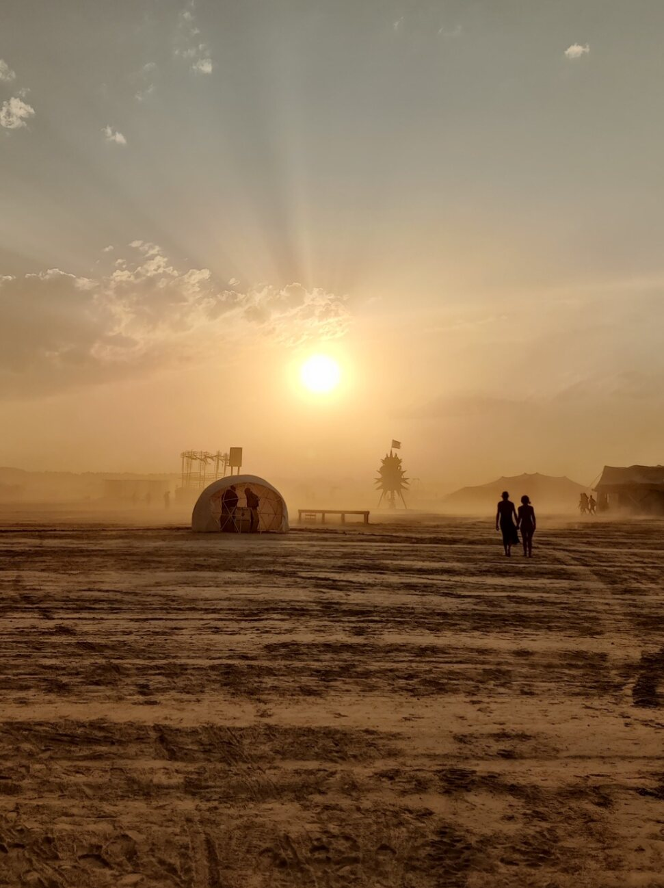
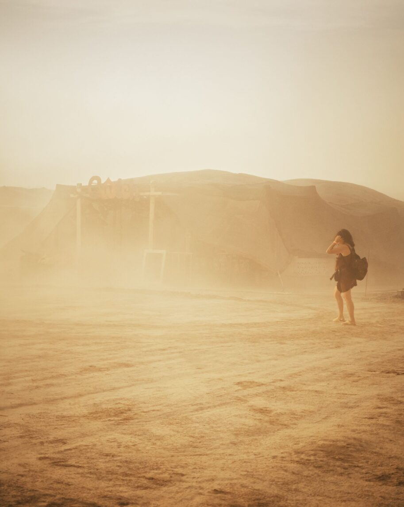
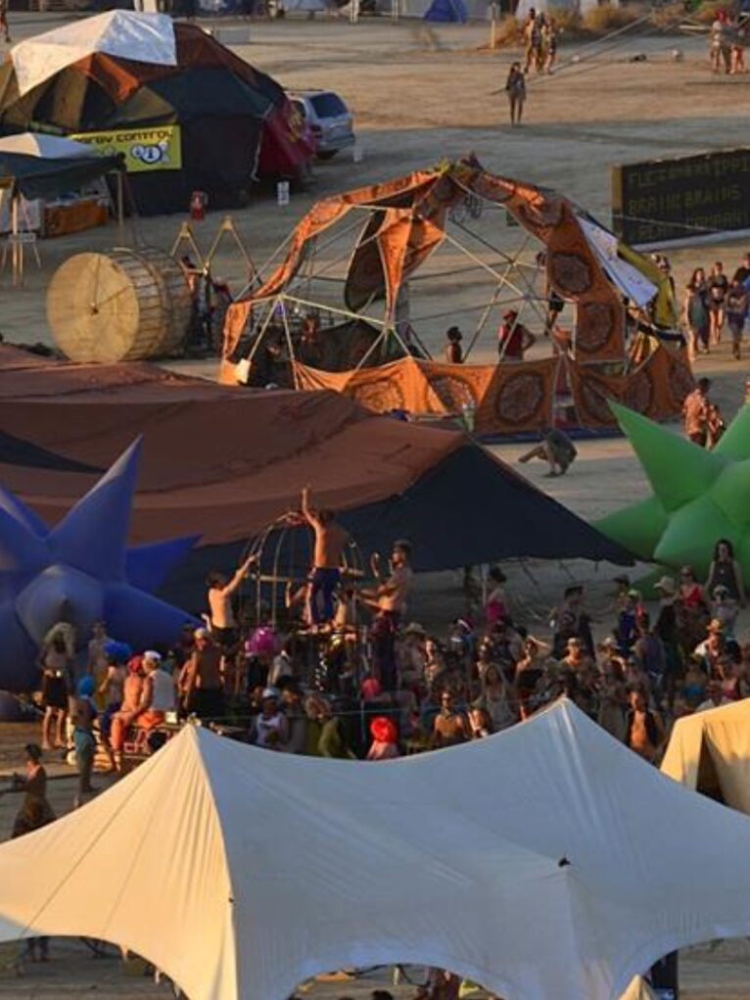
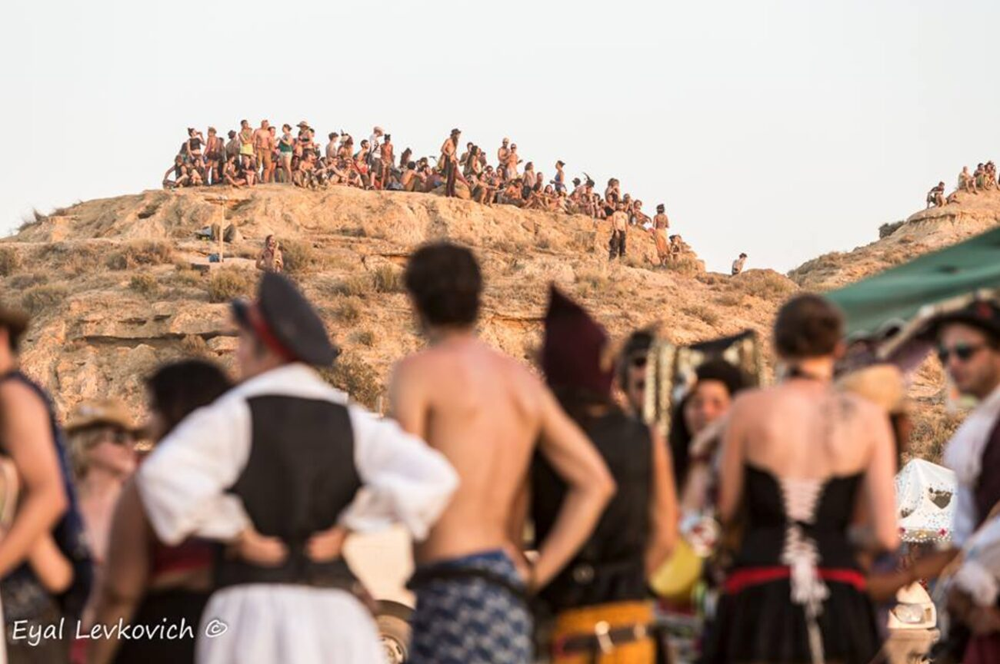
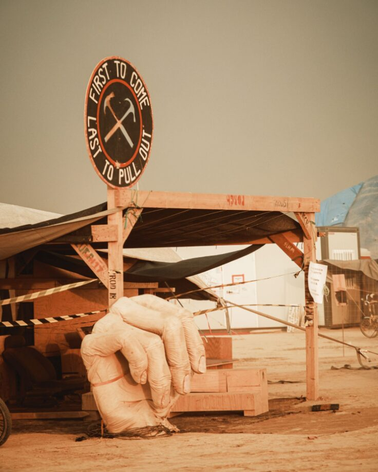
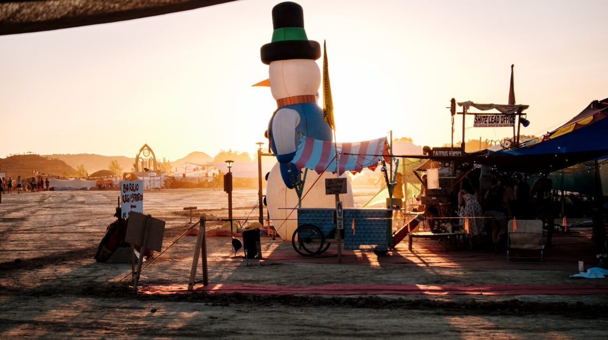
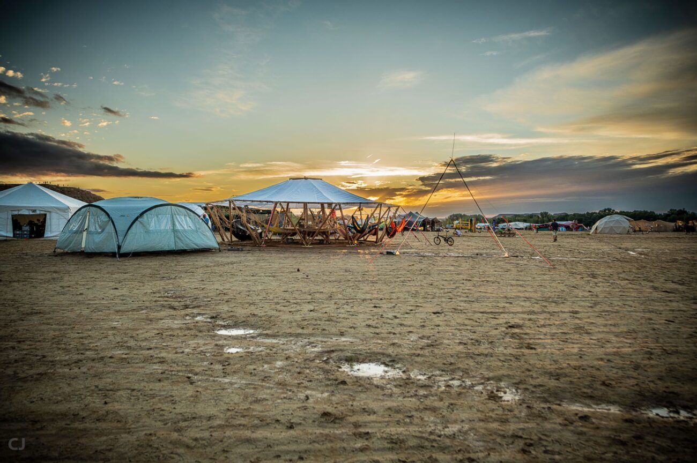
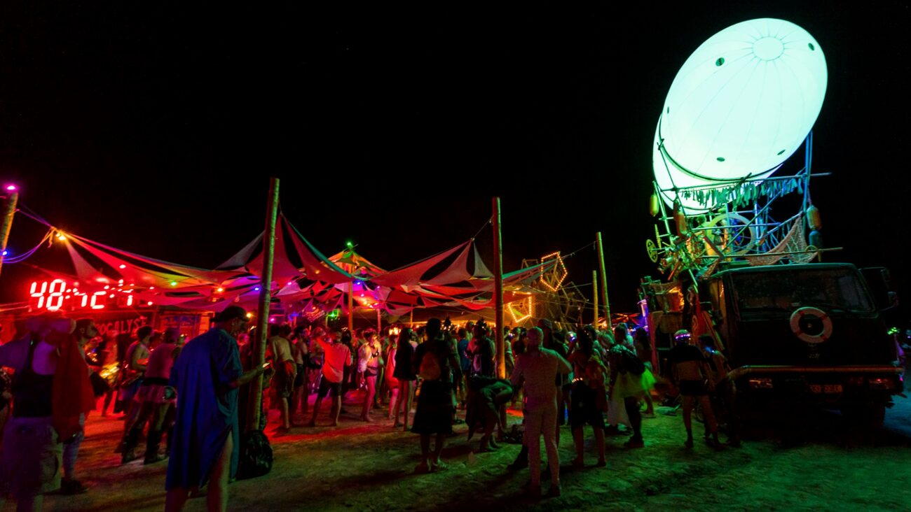
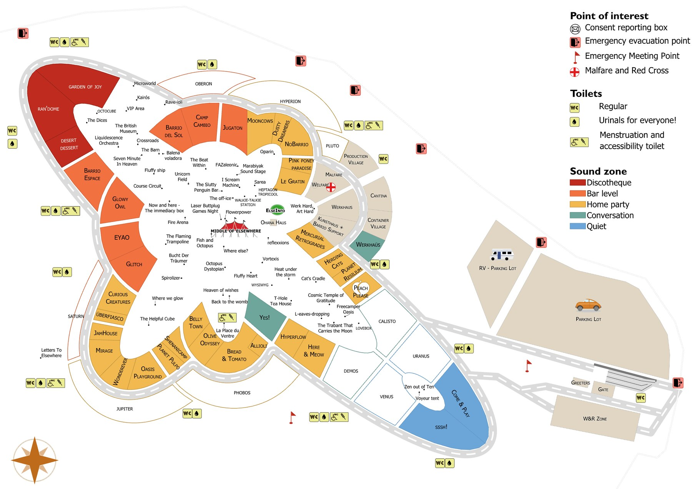

Der Elsewhere
Survival Guide.
Ein Feldhandbuch zum Aufbau, Bewohnen und Abbau einer Stadt auf Zeit für sechs Tage in der Monegros-Wüste. Elsewhere ist kein Ort, den man besucht. Man lässt ihn entstehen.
Nobodies Collective Offizieller Regional Burn

Inhalt.
Sieben Kapitel. Lesen Sie sie der Reihe nach — oder springen Sie zu dem Abschnitt, der zur jeweils aktuellen Krise passt.
- 01Was ist Elsewhere?
- 02Mitmachen
- 03Vorbereiten
- 04Überleben vor Ort
- 05Die Wüste teilen
- 06Praktische Infos
- 07Sicherheitsinfos
Lieber auf Papier? Laden Sie das druckbare PDF herunter — drucken, falten, im Zelt verstauen.
Zeitplan.
Bestätigte Meilensteine für Elsewhere 2026. Tragen Sie sie in Ihren Kalender ein; die Wüste wartet nicht auf Sie.
März
14 Mar — Verkauf der Volunteer-Tickets startet.
20 Mar — Öffentlicher Ticketverkauf startet. Wave-1-Preise enden am 14 April.
April
19 Apr — Bewerbungen für Barrio & Placement öffnen.
Registrieren Sie sich auf Humans — humans.nobodies.team —, um Rollen und Schichten zu durchstöbern.
Mai
4 May, 20:00 CEST — Bustickets (Barcelona ↔ Gelände) im Verkauf.
Kaufen Sie Ihre Ausrüstung. Wasserkanister, Schatten, Baustahl, Gaffer.
Juni
~12 Jun — Placement-Crew trifft ein.
~15 Jun — Aufbauphase beginnt. Packen und umpacken.
Juli
7 → 12 Jul — Elsewhere findet statt.
~22 Jul — Abbau endet. Die Wüste ist wieder zu Staub geworden.
Website
nobodies.team — bereinigte Sitzungsprotokolle, FAQ und Richtlinien-Updates, sobald sie eintreffen.
Discord
Der zentrale Knotenpunkt. Arbeitsgruppen, Mitfahr-Threads, Governance-Updates, Austausch in Echtzeit.
Humans
humans.nobodies.team — registrieren Sie sich als Volunteer, Mitglied oder Mitwirkende:r. Schichten durchsuchen, abstimmen, koordinieren.
Was ist
Elsewhere?
Elsewhere ist ein sechstägiges partizipatives Zusammentreffen in der Monegros-Wüste, organisiert vom Nobodies Collective, einem gemeinnützigen, von seinen Mitgliedern getragenen spanischen Verein (NCA). Seit 2026 ist Elsewhere ein offiziell anerkannter Regional Burn unter der Burning Man Organization. Er beruht auf den zehn Burning-Man-Prinzipien, auf radikaler Teilhabe und auf allem, was Sie selbst einbringen.
Es gibt keine Zuschauer. Es gibt keine VIPs. Es gibt kein die da — nur uns, und wir stecken alle gemeinsam darin. Sie sind Publikum und Darsteller zugleich. Sie bauen die Barrios, Sie machen die Kunst, Sie kochen die Mahlzeiten, Sie fegen die Playa.
Wenn Sie hierhergekommen sind in der Hoffnung, das gemeinsame Ethos und die vertrauten Gesichter früherer Treffen in dieser Wüste wiederzufinden — dann sind Sie richtig.

Man geht nicht nach Elsewhere. Man lässt es entstehen.

Über diesen Guide.
Alles, was Sie wissen müssen, um sechs Tage in der Wüste zu überstehen, ohne Ihre Würde, Ihre Freunde oder Ihre Wasserflasche zu verlieren.
Drucken Sie ihn aus. Falten Sie ihn. Verstauen Sie ihn im Zelt. Wenn Sie ein Ticket für jemand anderen gekauft haben, sorgen Sie dafür, dass auch diese Person ein eigenes Exemplar bekommt.
Diese Ausgabe ging im Juni 2026 in Druck. Manche Details können sich bis Juli noch ändern — prüfen Sie alles Operative anhand der FAQ auf nobodies.team und der neuesten angepinnten Beiträge auf Discord.
Nobodies.team
Die offizielle Seite. FAQ, Erklärungen des Vorstands, Ticket-Regelung für Geringverdiener, Transparenzhinweise.
Discord
discord.gg/Xmj6YbFwSM — das lebendige Nervensystem der Community. Abteilungskanäle, Governance, Mitfahrgelegenheiten.
Humans
humans.nobodies.team — melden Sie sich für Schichten an, bewerben Sie sich als Mitwirkende:r oder Mitglied, erhalten Sie Stimmrechte.
Das Erste, was Sie wissen sollten: Elsewhere ist überhaupt nicht wie die Veranstaltungen, die Sie bisher besucht haben.
10 Grundprinzipien.
Keine Gebote. Keine Regeln. Ein gemeinsamer Kompass — zehn Ideen, auf die die Community immer wieder zurückkommt, wenn es darum geht, wie man gemeinsam in einer Wüste miteinander umgeht.
Wenn wir uns gegenseitig das Leben leichter oder schöner machen können, dann tun wir es. Leihen Sie das Werkzeug. Teilen Sie den Schatten. Reichen Sie den Becher weiter.
Alles, was Sie mitbringen, kann zu MOOP werden — Matter Out Of Place. Ihr Müll, Ihre Verantwortung. Immer.
Essen, Wasser, Unterkunft, eine Umarmung, eine ruhige halbe Stunde — besorgen Sie sich, was Sie brauchen. Und bitten Sie dann die Menschen um Sie herum, wenn die Eigenverantwortung an ihre Grenzen kommt.
Was Sie hineingeben, kommt zurück. Die Arbeit ist das Spiel; das Spiel ist die Arbeit. Hier gibt es kein Publikum.
Ein Lied, ein Bier, eine helfende Hand beim Ziehen eines Herings. Geschenke kommen ohne Erwartung einer Gegenleistung — genau das ist der Sinn.
Seien Sie hier, seien Sie elsewhere, seien Sie präsent. Die ganze Stadt verschwindet in zwei Wochen. Verpassen Sie sie nicht durch einen Bildschirm.
Keine Verkäufer, keine Sponsoren, keine Logos. Das Geld aus der Gleichung zu nehmen, macht Schenken und Kooperation erst echt. Ice ist die einzige Ausnahme.
Heißen Sie Menschen so willkommen, wie Sie selbst willkommen geheißen werden möchten. Toleranz reicht nicht — aktive Inklusion ist die Aufgabe.
Ein bunt zusammengewürfelter Haufen eigenverantwortlicher Fremder, zusammengehalten vom einfachen Wunsch, zu etwas zu gehören, das größer ist als wir selbst.
Tragen Sie es, tanzen Sie es, singen Sie es, bauen Sie es. Drücken Sie sich laut aus — und denken Sie daran, dass alle um Sie herum dasselbe Recht haben.
Gemeinsam stärker, jedes Mal.

Was Sie erwartet.
Niemand will, dass Sie krank werden, sich verletzen oder Schlimmeres. Damit unter all dem ein Sicherheitsnetz gespannt ist, kommen engagierte Crews drei Wochen vor Öffnung der Tore aufs Gelände — sie spannen Schatten, ziehen Strom, bauen die Toiletten, pflanzen die Stadt.
Kunst
Von Teilnehmenden gemacht. Große Skulpturen, winzige Gesten, Dinge, über die Sie im Staub stolpern. Die offene Wüste ist ihr Zuhause.
Artomobiles
Langsam rollende Kunstfahrzeuge — motorisiert oder mit Pedalkraft. Sie nehmen Sie vielleicht mit. Sie spielen Ihnen vielleicht ein Lied.
Barrios
Thematische Nachbarschaften, gebaut von Gruppen von Teilnehmenden. Bewerben Sie sich um ein Placement und steuern Sie etwas Öffentliches bei — eine Bar, einen Workshop, eine Bühne —, und Sie bekommen ein Grundstück.
Free Camp
Sie wollen sich keinem Barrio anschließen? Campen Sie auf eigene Faust. Wer zuerst kommt, campt zuerst. Sie kümmern sich selbst um Wasser, Essen, Schatten.
Werkhaus
Das Zuhause der Aufbau- und Abbau-Crews — eine gemeinsame Schattenstruktur, ein Ort zum Ausruhen, Essen und Campen an der Seite der Menschen, die die Stadt bauen.
Gate & Greeters
Der einzige Ein- und Ausgang. Das Gate prüft Ticket und Ausweis und gibt Ihnen ein Bändchen. Die Greeters heißen Sie willkommen. Am Eingang werden keine Tickets verkauft.
Fire Arena
Die einzige Zone, in der Feuer-Performance erlaubt ist — nach Einbruch der Dunkelheit und unter Aufsicht.
Middle of the Desert
Das gemeinschaftliche Herz — ein großer beschatteter Raum mit Soundsystem. Vorträge, Workshops, Konzerte, Tanzflächen und Nachmittagsschläfchen, wenn die Sonne zu viel ist.
Cantina
Die Crew-Küche. Wenn Sie eine 6-stündige Schicht während der Event-Zeit übernehmen, ist eine Mahlzeit Teil der Abmachung. Das Herz des Betriebs während Auf- und Abbau.
Malfare Complex
Der rund um die Uhr besetzte Sicherheits-/Sanitäts-/Welfare-Knotenpunkt. Cruz Roja (Red Cross), das Welfare-Team und die Nomads an der Peripherie sind alle hier ansässig.
Welfare
Ein 24 Stunden geöffneter, ruhiger, nüchterner, vertraulicher Ort zum Ankommen, Durchatmen, Runterkommen. Rund um die Uhr geöffnet; geschulte Zuhörende im Dienst.
Info Point
Die Schaltzentrale für Teilnehmende. Melden Sie sich für Schichten an, fragen Sie alles, finden Sie Mitfahrgelegenheiten, geben Sie Fundsachen ab.
Ice
Das einzige, was vor Ort verkauft wird. Täglich 13:00–19:00 geöffnet, rund €2,50 für einen 2 kg-Beutel. Nur Bargeld.
Inclusion Hub
Ein sicherer, nüchterner Raum für Familien und alle, die einen ruhigeren Rhythmus brauchen. Täglich von der Community gestaltete Aktivitäten, abseits der größeren Soundsysteme.
Toiletten
Vollständig geschlossene mobile Toiletten, dazu überall verteilte Urinale für alle Geschlechter. Rollstuhlgerechte und menstruationsfreundliche Optionen sind vor Ort.
Recycling Zone
Wohin Ihr sortierter Müll kommt. Von Volunteers betrieben — packen Sie mit an. Täglich geöffnet 11:00–19:00 (Di–Sa), am letzten Tag 9:00–18:00.
Am Gate bereithalten
Ihr Ticket (gedruckt oder auf einem geladenen Handy) UND einen gültigen Ausweis, dessen Name mit dem Ticket ÜBEREINSTIMMT. Stimmen die Namen nicht überein — kommen Sie nicht rein. Keine Ausnahmen.
Profi-Tipp
Sortieren Sie Ihren Müll am Zelt, BEVOR Sie ihn zur Recycling Zone bringen. Wenn Sie es nicht tun, machen Sie es dort — in der Sonne — vor Publikum.
Raue Umgebung.
Elsewhere findet in einer echten Wüste statt — heiß, trocken, ungeschützt, ohne jeden Komfort von zu Hause. Sich daran zu gewöhnen braucht Zeit.
Wundern Sie sich nicht, wenn sich Ihr erster oder zweiter Tag hart anfühlt. Dinge, die Sie im Alltag wegstecken, treffen Sie hier draußen härter. Gehen Sie es langsam an.
Temperaturen von weit über 40°C / 105°F. Respektieren Sie die Sonne. Dies ist nicht der Ort, um an Ihrer Bräune zu arbeiten.
Siesta
Bleiben Sie zwischen 13 und 16 Uhr aus der Sonne. Versuchen Sie eine Siesta — genau das tun die Einheimischen.
Bedecken
Hüte, Sonnenbrillen, Sonnencreme, nasse Kleidung und Unterstände verringern Ihre Sonnenbelastung.
Trinken
3–5 Liter pro Person und Tag. Trinken Sie, bevor Sie durstig sind. Halten Sie Ihren Urin klar.
Mitmachen.
Humans
humans.nobodies.team — die offizielle Plattform. Legen Sie ein Konto an, durchstöbern Sie die Abteilungen, melden Sie sich für Schichten an, bewerben Sie sich als Mitwirkende:r oder Mitglied.
Profi-Tipp → Volunteers erhalten Zugang zu einem eigenen Ticketverkauf vor der öffentlichen Welle.
Elsewhere wird von den Menschen gebaut, die dafür auftauchen. Es gibt kein ‘die da’, das das Event leitet — nur uns.
- Früh kommen für den Aufbau oder länger bleiben für den Abbau
- Eine Schicht während der Event-Zeit übernehmen
- Kunst machen und mitbringen
- Einen Workshop leiten, Musik machen, eine Show auf die Beine stellen
- Ein Barrio gründen und betreiben
Drei Ebenen des Engagements.
Nobodies Collective ist ein von seinen Mitgliedern getragener Verein. Über das ‘Volunteer’-Sein hinaus können Sie sich auf drei verschiedenen Ebenen einbringen — jede mit eigenen Rechten und Pflichten.
Mitglieder (Asociados)
Das demokratische Rückgrat. Stimmen Sie in der Generalversammlung ab, kandidieren Sie für den Vorstand. Bewerbung über Humans — erfordert mehr als 3 Monate substanziellen Beitrags ODER eine erfolgreiche Leitungsrolle bei einem ähnlichen Event in Spanien.
Mitwirkende
Menschen, die außerhalb der Event-Zeit Vorbereitungsarbeit leisten — Dokumente, Designs, Pläne, Builds. Unterschreiben eine leichte Vereinbarung (IP & DSGVO). Werden oft zur Abstimmung über Community-Angelegenheiten eingeladen.
Volunteers
Alle mit Ticket, die vor Ort eine Schicht übernehmen. Kein zusätzlicher Papierkram — der Code of Conduct, dem Sie beim Kauf zugestimmt haben, genügt.
Wo Sie sich einklinken können.
Keine besonderen Fähigkeiten nötig — nur Motivation. Mischen und kombinieren Sie.
- Kochen Sie gern? → Cantina.
- Geduldiges Ohr, sanfte Stimme? → Welfare.
- Sprechen Sie viele Sprachen? → Dolmetscher:innen.
- Lötkolben? → Strom, Kommunikation, Sound & Licht.
- Eine Antwort auf alles? → Info Point.
- Schwere Maschinen? → Logistik.
- Liegt Ihnen das Land am Herzen? → Leave No Trace.
- Gehen & anderen helfen? → Malfare / Nomads.
- Energie für den Laden? → Ice.
- Erstes freundliches Gesicht? → Gate & Greeters.
- Familien & teilnehmende Kinder unterstützen? → Inclusion Hub.
- Tabellenkalkulations-Genie? → Produktion & Verwaltung.
Aufbau (~15 Jun → 7 Jul)
Drei Wochen, in denen die Stadt aus dem Staub erhoben wird — Stromgräben, Schattenstrukturen, das Vermessen der Straßen, das Versorgen der Crew. Harte Arbeit, tiefe Freundschaften, kostenlose Mahlzeiten in der Cantina.
Abbau (12 → ~22 Jul)
Viele werden Ihnen sagen, dass der Abbau der beste Teil ist. Kleine Crew, lange Abende, die letzten Vorräte als Abendessen und die Jagd nach jedem Krümel MOOP, bis die Wüste unberührt aussieht.
Das ganze Jahr
Der Verein ist das ganze Jahr aktiv. Koordinator:innen, Leads, Arbeitsgruppen. Treten Sie Discord und der Humans-App bei, um sich über den Juli hinaus einzubringen.
Bringen Sie Kunst mit.
Kunst bei Elsewhere ist kein für ein Publikum kuratiertes Programm — sie ist das Geschenk, das Sie einer Community bringen, die zurückschenkt. Von einer Klang-Arbeit in einer stillen Ecke bis zu einer Skulptur, in die man hineinklettern kann, zählt alles.
Beim Art-Team registrieren
Ob Sie mit einem fertigen Werk, einer halb gebackenen Idee auftauchen oder vorhaben, vor Ort etwas zu improvisieren — registrieren Sie sich beim Art-Team, bevor Sie bauen. Es hilft bei Standortwahl, Sicherheit, Material und einem kleinen Zuschuss, wenn Ihr Projekt dafür in Frage kommt.
- Künstler:innen bringen ihr eigenes Material und Werkzeug mit — ein kleines Notfall-Kit ist vor Ort.
- Alles aus Metall über 2 m muss geerdet werden.
- Bewerbungen für Kunstzuschüsse enden am 17 May.

Artomobiles
Mutant Vehicles — motorisiert oder mit Pedal — müssen vor der Anreise vorab registriert werden. Vor Ort wird jedes Artomobile auf allgemeine Sicherheit geprüft. Bestehen Sie die Prüfung, erhalten Sie Ihren Artomobile Pass, dann dürfen Sie vor Ort fahren. Auch Soundregeln gelten — die Wüste ist klein und Klang trägt weit.
Innovationsprojekte
Machen Sie die Stadt besser. Schnellerer Aufbau, klügere Beleuchtung, weniger Wasser, grünere Energie, weniger Fahrzeuge, schlauere Abfallströme. Muss weder partizipativ noch künstlerisch sein — auch hinter den Kulissen und funktional ist großartig.
Workshops & Performances
Tanz, Musik, Vorträge, Yoga, Knotenkunde, Fermentation, Aktzeichnen, Philosophie, Repair-Cafés. Alles ist möglich. Reichen Sie Ihr Event beim WWW Guide ein, damit die Leute es finden.
Ein Barrio gründen
Gemeinschaftscamps bündeln Ressourcen — teilen Kosten, teilen Küchen, verteilen Arbeit, bauen etwas Öffentliches, das der Rest der Stadt nutzen kann. Eine Bar, eine Bühne, ein Teehaus, ein Trampolin, ein Bällebad. Bewerben Sie sich über das Barrios-Team um ein Placement.
Vorbereiten.

Jetzt, da Sie die Grundlagen gelesen haben, sprechen wir über Sie. Was Sie wissen müssen — und was Sie mitbringen müssen.
Bitte bedenken Sie
Alles, was Sie nach Elsewhere mitbringen, MUSS nach dem Event wieder mit nach Hause genommen werden. Auch kaputt. Auch dreckig. Auch wenn Sie es nicht mehr haben wollen. Die Volunteers der Waste & Recycling Zone nehmen nur Ihren Lebensmittel- und Getränkemüll entgegen.
Was Sie mitbringen sollten.
Packen Sie leicht, packen Sie klug, packen Sie zweimal. Nutzen Sie dies als Master-Checkliste.
Dokumente
- Gültiger Personalausweis oder Reisepass
- Gedrucktes Ticket mit Ihrem Namen (oder geladenes Handy)
- Europäische Krankenversicherungskarte oder Nachweis einer Alternative
Kleidung & Co.
- Handtuch
- Sonnenbrille
- Geschlossene Schuhe (Flip-Flops zum Gehen lieber weglassen)
- Schichten für sehr heiße Tage & möglicherweise eiskalte Nächte
- Schutzbrille — für häufige, wirklich staubige Winde
- Hut, Tuch, Mütze — alles, was die Sonne abhält
- Regenkleidung — für eine Wüste wird es ganz schön matschig
Campingausrüstung
- Zelt und Schattenstruktur
- 30 cm (12 Zoll) lange Heringe oder Baustahl (es wird sehr windig)
- Mehrjahreszeiten-Schlafsack oder zusätzliche Decke
- Isomatte — der Boden entzieht dem Körper Wärme
Zubehör
- Wasserflasche
- Sonnencreme
- Ein stabiler Becher — wiederverwendbar, kein Glas. Pflicht.
- Tragbarer Aschenbecher (für Raucher)
- Taschenlampe mit Batterien — eine LED-Stirnlampe ist am besten
- Gürtel oder Rucksack — Sie tragen ständig etwas mit sich herum
- Starkes Mückenschutzmittel
- Augenspülung, Ersatz-Kontaktlinsen, Ihre Brille
- Pflanzensprüher / Wasserpistole zum Abkühlen
- Ohrstöpsel & Schlafmaske — nicht alle schlafen, wenn Sie schlafen
Hygiene
- Erste-Hilfe-Set
- Händedesinfektionsmittel
- Umweltfreundliche Seife
- Alle Medikamente (verschreibungspflichtige & rezeptfreie)
- Transparente Müllbeutel & Ziplock-Tüten für MOOP
Kühle Lagerung
Wenn Ihre Medikamente kühl gelagert werden müssen, planen Sie im Voraus. Wenden Sie sich bei Fragen oder Bedenken an welfare@nobodies.team.
Wahrscheinlich auch mitbringen.
- Taschenmesser oder Multitool
- Ein Paar Arbeitshandschuhe
- Plastikflaschen oder Tennisbälle, um gefährliche Baustahl-Heringe abzudecken
- Kabelbinder
- Gaffer- oder Panzertape
- Ein Gummihammer
- Eine Schaufel
- Eine Uhr
- Tragbarer Aschenbecher
- Lippenbalsam / Lippenpflegestift
- Haarbürste
- Tampons, Binden, Menstruationstasse
Verbotene Gegenstände.
Lassen Sie alles, was zerbrechen oder im Wind davonfliegen kann, zu Hause.
Glas
Flaschen, Gläser und alles, was zerspringen kann.
Federn & Glitzer
Auch biologisch abbaubar. Der Abbau-Trupp kann den Unterschied nicht erkennen.
Überflüssige Verpackung
Entfernen Sie äußere Schichten (z. B. Karton) vor der Ankunft.
Sprengstoff
Signalraketen, Raketen, Schusswaffen (inkl. BB- / Luft- / Paintball-Waffen).
Feuerwerk
Brennende Fackeln, Holzkohle-Grills, Brandgefahren.
Feststoff-Feuer
Grills oder feste Brennstoffe jeder Art.
Himmelslaternen
Auch als chinesische Laternen bekannt.
Haustiere
Nur vorab registrierte Assistenzhunde erlaubt.
Kunstrasen, Styropor
Plastiktüten, Einwegbecher.
Lebende Pflanzen
Und — am wichtigsten — eine schlechte Einstellung.
Verlieren Sie Ihre Sachen nicht.
Jedes Jahr gehen viele Dinge verloren. Ein paar kleine Gewohnheiten erhöhen die Chance, dass Ihre Sachen nach Hause zurückfinden.
- Beschriften Sie Ihren Becher und Ihre Wasserflasche mit einem Permanentmarker oder Namensschild.
- Ersetzen Sie den Sperrbildschirm Ihres Handys durch Ihre Kontaktdaten.
- Flip-Flops verschwinden ständig — machen Sie Ihre leicht erkennbar.
- Stunden an einem Kostüm verbracht? Fügen Sie ein Schild mit Ihren Kontaktdaten hinzu.
- Wenn eine Tasse seit Generationen in der Familie ist… lassen Sie sie vielleicht zu Hause.
Überleben
vor Ort.
Sobald Sie hier sind, stellt die Wüste alles auf die Probe. Campen Sie klug, essen Sie gut, trinken Sie mehr Wasser, als vernünftig erscheint, und respektieren Sie die Toiletten.
Wohin mit meinem Zelt?
Elsewhere ist in mehrere Soundzonen unterteilt, von laut bis leise. Eine Karte der Soundzonen und Freecamping-Bereiche ist am Gate erhältlich.
- Freecamping gilt nach dem Prinzip „Wer zuerst kommt, mahlt zuerst" — kein Reservieren von Plätzen vor dem Event.
- In der Quiet Zone gilt: KEINE Fahrzeuge, KEINE Generatoren, KEIN verstärkter Sound.
- Kein Campen auf der Peripheriestraße oder außerhalb der Campingbereiche.
- Halten Sie mindestens 100 m Abstand zu allen Überschwemmungsbereichen — Ihr Zelt könnte weggespült werden.
Unterstand.
Vermeiden Sie billige Sofort-Unterstände, die einen Sturm nicht überstehen. Schattenmaterial sollte mindestens zu 80% UV-beständig sein — besser noch: zwei Lagen verwenden.
Verwenden Sie Seil oder Kabel, um Ihren Unterstand zu verankern. 30 cm (12 Zoll) lange Heringe oder Baustahl sind nötig, um Ihr Zelt gegen starke Winde zu sichern.
Profi-Tipp
Beschweren Sie Ihr Zelt. Wenn Ihre Heringe herausfallen, fliegt Ihr Zelt nicht davon. Bringen Sie Metallplatten mit, um sie an windigen Tagen um die Lamellen zu legen.
Essen & Wasser.
Es gibt keine zentrale Wasserversorgung. Wir empfehlen 6–8 Liter pro Tag und Person — trinken, duschen, kochen, abwaschen.
Bringen Sie genug Essen für Ihre gesamte Gruppe für die ganze Dauer mit. Getrocknete, eingedoste und andere nicht verderbliche Lebensmittel sind empfehlenswert. Frisches Obst und Gemüse hält nicht — nur so viel wie für die ersten drei Tage. Snacks sind schön und eignen sich gut als Geschenke.
Kochausrüstung.
Bringen Sie Ihren eigenen Becher, Teller, Besteck und Spülzeug mit. Wegwerfartikel sind die größte Müllquelle.
Gas ist der einzige zugelassene Brennstoff — keine Holzkohle- oder Feststoff-Grills. Halten Sie sich weit von allen brennbaren Materialien fern, einschließlich Zelten und Unterständen, und stellen Sie sicher, dass die Ausrüstung in gutem Zustand ist.
Wie man die Toiletten benutzt.
Nur die 3 P sollten in eine Toilette gelangen: Pipi, Po (Kot), Papier. Keine Feuchttücher, Tampons, kein Plastik oder andere Gegenstände.
Jedes Dixi-Klo wird regelmäßig mit Toilettenpapier und Händedesinfektionsmittel aufgefüllt. Die Toiletten werden von einer Armee fantastischer Shit Ninjas betreut — jedes Barrio ist für einen Toilettenblock verantwortlich. Welches Barrio das ist, hängt im Holzkasten neben den Toiletten aus.
Wenn es ein Problem gibt (fehlendes Papier, Desinfektionsmittel usw.), geben Sie ihnen Bescheid, damit es schnellstmöglich behoben werden kann — zum Vorteil aller.
Wichtig
Bitte verrichten Sie Ihr großes Geschäft ausschließlich in den bereitgestellten Toiletten. Menschliche Fäkalien sind giftig und können schwere Krankheiten verursachen.
Generator- & Gassicherheit.
- Wenn Sie einen Generator mitbringen, campen Sie nicht in der No-Sound-Zone. Bauen Sie eine Schalldämmung darum herum — oder teilen Sie sich einen größeren, leiseren.
- Platzieren Sie Generatoren innerhalb Ihrer Camp-Grenze, ≥10 m von der Peripheriestraße und ≥25 m von Vegetation entfernt.
- Alle Generatoren müssen einen geerdeten Erdspieß haben — zertifiziert von unserem Team und einem örtlichen Elektriker.
- Benzintanks & Gasflaschen: im Schatten, weit von Hitzequellen entfernt, CE-gekennzeichnet.
- Große Tanks müssen abgesperrt werden. Benzin ≥15 m vom Generator entfernt lagern.
- Gummikomponenten in gutem Zustand, von Hitze ferngehalten.
Vorsicht — Gelbe Flagge
Eine gelbe Flagge bedeutet vergrabenes Stromkabel. Nicht graben.
Feuerlöscher
6 kg ABC-Pulver. Auch bei reiner Kochausrüstung: Halten Sie einen in Küchennähe bereit.
Gewitter
Das Gelände ist durch Blitzableiter geschützt, aber seien Sie vorsichtig. Legen Sie sich nicht auf den Boden — stellen Sie sich mit eng zusammenstehenden Füßen hin oder setzen Sie sich auf einen Stuhl ohne Bodenkontakt. In einem Container oder Auto sind Sie sicher (Faradayscher Käfig). Bleiben Sie nach einem Blitzeinschlag ein paar Minuten drinnen, damit sich das Metall entlädt. Alle Metallstrukturen über 2 m Höhe müssen geerdet sein. Nähern Sie sich keinem Generator, wenn Sie nicht dafür qualifiziert sind.
Sie & die Monegros-Wüste.
Es gibt Dinge, die Sie in der Standardwelt meistern, die bei Elsewhere viel schwerer auszuhalten sein werden. So wirkt die Wüste auf Sie — und so schützen Sie sich.
Sonne / Hitze
Bleiben Sie zwischen 13 und 16 Uhr aus der Sonne. Versuchen Sie eine Siesta. Hüte, Sonnenbrillen, Sonnencreme, nasse Kleidung, Unterstand.
Wind
Wunderschöne Staubteufel. Stark genug, um Zelte davonfliegen zu lassen. Befestigen Sie alles ordentlich am Boden.
Staub
Sie werden ihn schmecken, essen, einatmen. Schutzbrillen sind nicht nur zum Cool-Aussehen da — sie schützen Sie.
Stürme & Regen
Großartig UND gefährlich. Graben Sie Gräben um Ihr Zelt, um nicht Teil eines neu entstandenen Flusses zu werden.
Gelände
Die Hügel bestehen aus lockerem Lehm — nicht zum Klettern. Die Bereiche rund um das Gelände enthalten Löcher und tiefe Risse. Das Gelände verlassen = Verletzungsgefahr.
Biogefahr
Der nahegelegene Fluss enthält chemische Abwässer aus der Landwirtschaft und ist NICHT sauber.
Trinken Sie genug Wasser?
Einige Anzeichen, dass es nicht so ist:
- Sie tragen nicht jederzeit eine Wasserflasche bei sich.
- Sie nippen, statt richtig zu trinken.
- Sie warten, bis Sie durstig sind (zu spät).
- Sie werden gereizt.
- Ihr Urin ist alles andere als klar und reichlich.
Symptome von Dehydrierung: Kopfschmerzen, Magenkrämpfe, Bauchschmerzen, Verstopfung, grippeähnliche Symptome. Bringen Sie Betroffene in den Schatten und kontaktieren Sie Welfare. Alkohol, Koffein und andere Drogen erhöhen das Dehydrierungsrisiko.
Rezept für Rehydrierungsflüssigkeit (10 L)
Gut mischen und rehydrieren. Oder bringen Sie Ihre Lieblings-Sport- / Elektrolytbeutel mit.
Leave no trace.
Sie übernehmen Verantwortung für Ihre Umweltauswirkungen. Denken Sie daran — es darf kein Beweis dafür zurückbleiben, dass Sie jemals bei Elsewhere waren.
Die Regeln.
- Entfernen Sie alle überflüssige Verpackung vor der Abreise.
- MOOP (Matter Out Of Place) gehört nicht auf den Boden — heben Sie es auf, wenn Sie es sehen.
- Verwenden Sie transparente Müllbeutel, damit Volunteers sicher sortieren können.
- Räumen Sie täglich Müll aus Ihrem Campingbereich / Barrio.
- Bringen Sie Müll während der Öffnungszeiten zur Recycling Zone.
- Verlassen Sie Ihr Barrio / Camp mindestens eine Stunde, bevor die W&R Zone schließt.
- Fahren Sie in die Stadt? Werfen Sie sortierten Müll dort in die Recyclingcontainer.
- Nehmen Sie Ihre Sachen wieder mit nach Hause — wenn Sie es mitgebracht haben, können Sie es zurücknehmen. Wir können keine kaputten Zelte, Stühle, Teppiche oder ähnliche große Gegenstände annehmen.
- Planen Sie Zeit ein, um beim Packen & Aufräumen zu helfen.
- Machen Sie vor der Abreise eine Kontrollrunde durch Ihren Zeltbereich.
Die W&R Zone.
Der ausgewiesene Ort für Müll und Recycling. Mit Sorgfalt und Respekt zu nutzen — Volunteers sollten sich nicht mit den Sachen abmühen müssen, die Sie nicht wollen. Täglich geöffnet 11:00–19:00 (Di–Sa), Sonntag 9:00–18:00.
Gelb
Metall, Plastik & Tetrapaks.
Glascontainer
Glas, Flaschen und Gläser.
Blau
Sauberes Papier und Karton. Keine Taschentücher.
Schwarz
Restmüll — so wenig wie möglich.
Kompostlöcher
Kompost & schmutzige Taschentücher. Kein Fleisch, Fisch oder Milchprodukte.
Grauwasser
Werfen Sie es nicht in die Toiletten oder den Kompost. Verwenden Sie umweltfreundliche Seifen und Reinigungsmittel. Filtern Sie es, um große Bestandteile zu entfernen. Essensreste → kompostierbar (kein Fleisch / Fisch / Milchprodukte). Sammeln Sie es dann entweder, um es in der Stadt zu entsorgen, legen Sie einen Verdunstungsteich / ein Delta an oder verteilen Sie es im umliegenden Gebüsch. Der Boden hier ist nicht sehr durchlässig — graben Sie keine tiefen Teiche, das Wasser versickert nicht und Sie ziehen Fliegen und Mücken an.
Von Staub zu Staub ✦ Hinterlassen Sie nur Fußspuren ✦ Das ist Ihr Zuhause.
Leben mit
anderen Nobodies.
Kinder, Inklusion, Pronomen, Fotografie, Drohnen, Sound. Die Kunst, eine Stadt auf Zeit zu teilen, ohne sich gegenseitig das Leben schwer zu machen.
Kinder.
Aus Sicht von Elsewhere und des Gesetzes ist ein Kind jede Person unter 18 Jahren. Prüfen Sie die Öffnungszeiten der Barrios für Minderjährige und den WWW Guide für familienfreundliche Workshops. Darüber hinaus schreibt Elsewhere nicht vor, was für Ihre Kinder angemessen ist — das tun Sie als Elternteil oder betreuende Person.
Kinder können von der rauen Umgebung stärker betroffen sein als Erwachsene. Verlorene Kinder unter 12 werden zu Welfare gebracht, bis ihre erwachsene Betreuungsperson gefunden ist. Der Inclusion Hub ist ein Knotenpunkt für Familien.
Nur für Erwachsene.
Minderjährigen alkoholische Getränke auszuschenken ist illegal — sie tragen ein andersfarbiges Bändchen.
Sexuelle Handlungen vorzunehmen, wo Minderjährige anwesend sein könnten, ist in Spanien eine schwere Straftat. Wenn Sie sich darauf einlassen, tun Sie es privat oder in Räumen nur für Erwachsene — markiert auf der Playspaces Map am Info Point.
Inclusion-Team
Unterstützt Teilnehmende mit Behinderungen — sprechen Sie uns an zu Mobilität, Guides in Großschrift, Begleitpersonen-Tickets und allen anderen besonderen Bedürfnissen — Familien, BIPOC-Teilnehmende, LGBTQIA+, alle mit Bedürfnissen oder Anliegen, die über die anderer Teilnehmender hinausgehen. Kontaktieren Sie uns unter inclusion@nobodies.team und finden Sie mehr unter nobodies.team/inclusion
Über Pronomen.
Ein Pronomen ist ein Wort, das ein Nomen (insbesondere Namen) ersetzt — sie/ihr, er/ihm, they/them. Jede Person kann beliebige Pronomen verwenden. Helfen Sie einander, die richtigen Pronomen für eine Person zu verwenden.
Stellen Sie sich vor
Stellen Sie sich mit Ihrem Namen und Ihren Pronomen vor, egal ob Sie mit einer Person oder einer Gruppe sprechen. Fragen Sie die andere Person nach ihren Pronomen und geben Sie Ihr Bestes, sie sich zu merken.
Die Pronomen vergessen?
Fragen Sie noch einmal nach. Wenn die Person nicht mehr da ist, verwenden Sie ihren Namen (oder they/them), bis Sie wieder fragen können.
Einen Fehler gemacht?
Korrigieren Sie sich. Es ist nicht nötig, sich übermäßig zu entschuldigen — das kann es schlimmer machen.
Mit einer Gruppe sprechen
“Willkommen alle zusammen”, “Hallo Leute”, “Hallo zusammen”, “Hi an alle.” Wenn Sie einen Workshop leiten, machen Sie deutlich, für wen er ist, und stellen Sie sich mit Ihren Pronomen vor.
Menstruation Stations.
Barrierefreie Toiletten mit Handwaschgelegenheit, für Menschen, die ihre Periode haben und eine hygienische Möglichkeit zum Wechseln von Menstruationsprodukten brauchen. Diese Toiletten heißen vor Ort TAP (“Total Access! Period.”).
Hinweis: Diese Toiletten haben eine begrenzte Kapazität. Bitte nutzen Sie sie nur, wenn Sie mit Ihrer Menstruation zu tun haben oder Barrierefreiheit benötigen. Wenn die Wassereimer für die Handwaschgelegenheiten leer sind, seien Sie bitte so freundlich und füllen Sie sie am nächstgelegenen Barrio wieder auf.
Die Stationen sind mit einem Zahlenschloss gesichert, damit sie für die Menschen, die sie brauchen, sauber bleiben. Den Code erhalten Sie bei Welfare und am Info Point. Wenn diese geschlossen sind, erhalten Sie ihn bei Welfare.
Pronomen sichtbar machen
Stecken Sie einen Button an. Schreiben Sie sie auf Ihr Namensschild. Setzen Sie sie in Ihre Bio. Helfen Sie anderen, sich zu erinnern.
Consent.
Bei Elsewhere sind wir frei, uns auszudrücken, zu teilen, mitzugestalten und im Moment zu sein. Aber wenn unser Handeln das Erleben einer anderen Person direkt verändert, müssen wir deren Einverständnis (Consent) einholen.
Consent geht nicht nur um Sex. Es geht darum, sich rückzuversichern, bevor man einem Wunsch nachgeht, der andere betrifft — einschließlich nicht-sexueller Berührung, der Nutzung fremder Gegenstände, des Schenkens und des Fotografierens.
Mein Körper gehört mir, dein Körper gehört dir. Selbst beiläufige, verspielte Berührung, die normal erscheint, wird vielleicht nicht gut aufgenommen. Die einzige Art, es zu erfahren, ist zu fragen.
Von einer Person, die einwilligungsfähig ist. Wenn jemand bewusstlos ist, schläft oder zu berauscht ist, kann diese Person nicht zustimmen.
Handeln Sie nicht, wenn es etwas anderes als ein klares, begeistertes Ja ist. Versuchen Sie nicht zu überreden. Schweigen ist keine Zustimmung.
Es ist leicht, einem Ja zu danken. Schwerer und wichtiger ist es, einem Nein zu danken.
Zustimmung zu einer Handlung gibt keine Zustimmung zu anderen. Kommunizieren Sie weiter und passen Sie sich an, wie sich die Situation entwickelt.
Achten Sie auf die Menschen um Sie herum. Fragen Sie auch bei anderen nach, sogar bei Fremden. Lieber nachfragen, als zuzulassen, dass Schaden geschieht.
Bieten Sie an, was gegenseitige Leichtigkeit, Fürsorge oder Freude schafft — nicht Druck, Verpflichtung, Verwirrung oder emotionale Schuld. Ihre Absicht setzt das Erleben einer anderen Person nicht außer Kraft. Wenn Sie unsicher sind, ob Ihr Wunsch, Ihre Aufmerksamkeit, Energie oder Präsenz willkommen ist, halten Sie inne und fragen Sie nach.
Verschiedene Handlungen bergen verschiedene emotionale, körperliche, soziale und gesundheitliche Risiken. Ein Ja löscht nicht die Verantwortung für Fürsorge, Aufmerksamkeit, Kommunikation oder Konsequenzen. Seien Sie ehrlich über das Maß des Risikos — sich selbst und anderen gegenüber.
Consent ist ein großes Thema. Für mehr Informationen und einige großartige Guides wie den Relationship Survival Guide und den Guide to Navigating Sex+ Spaces at Burns besuchen Sie nobodies.team/consent
Geben Sie nur, was geschätzt wird. Nehmen Sie nur, was angeboten wird.
Wenn Sie eine Consent-Verletzung erleben.
Im Notfall
Nomads oder jede:r in der Nähe können helfen. Bitten Sie um Hilfe — bitten Sie jemanden, einen Nomad zu finden. Nomads sind die Vertreter:innen von Malfare. Sie sind nüchtern, geschult, haben Funkgeräte und stehen rund um die Uhr bereit, um vertraulich bei Verletzungen, Sicherheitsbedenken und zwischenmenschlichen Konflikten zu helfen. Sie besorgen Ihnen jede benötigte Hilfe.
Welfare & der Safer Space
Wir bieten rund um die Uhr Eins-zu-eins-Unterstützung bei Welfare. Sie können vertraulich mit einer geschulten freiwilligen Person in einer privaten, bequemen, klimatisierten Kabine (dem Safer Space) sprechen. Team-Mitglieder des Safer Space verschiedener Geschlechter und mit verschiedenen Sprachen sind rund um die Uhr entweder im Welfare-Zelt oder auf Abruf verfügbar.
Wenn Sie eine Consent-Verletzung oder einen heftigen Vorfall erlebt haben, sind wir für Sie da. Manchmal tauchen während des Events Erinnerungen an einen vergangenen Vorfall auf — es kann sogar sein, dass Sie sich daran erinnern, selbst den Consent einer anderen Person verletzt zu haben. Aus welchem Grund auch immer: Wenn Sie sich im Schock, verletzlich fühlen oder Schwierigkeiten haben, mit Ihrem Erleben umzugehen, suchen Sie bitte Hilfe und unterstützen Sie andere dabei, dasselbe zu tun.
Einen Vorfall melden
Wenn Sie glauben, dass von einer teilnehmenden Person beim Event eine unmittelbare Gefahr für die Community ausgeht, sprechen Sie mit einem Nomad oder gehen Sie zu Malfare. Consent Incident Report Forms (Meldeformulare für Vorfälle) sind bei Welfare erhältlich, in einem kleinen gelben Zelt im Free-Camping-Bereich und online über einen QR-Code (jede Toilette hat den QR-Code). Bitten Sie einen Barrio Consent Lead oder ein Team-Mitglied des Safer Space um Unterstützung beim Ausfüllen des Formulars. Die Meldeboxen werden täglich von 15.00–15.30 Uhr geleert, Dienstag bis Sonntag.
Nach dem Event werden die Meldungen von den Consent Response Leads bearbeitet (mehr zu unserem Ansatz und unseren Prozessen unter nobodies.team/consent). Es lohnt sich immer, einen Vorfall zu melden — er wird vertraulich behandelt, und es gibt viele Wege, wie er unserer Community helfen kann, sicherer zu werden.
Participant Code of Conduct
Sie haben ihm beim Ticketkauf zugestimmt. Werfen Sie einen Blick darauf, was darin steht. Wichtig — Kontaktinformationen von Ihrem Ticket können auf Anfrage an die Consent Response Leads weitergegeben werden, falls eine Verletzung festgestellt wird.
Fotografie.
Fragen Sie immer um Erlaubnis. Machen Sie kein Foto von jemandem gegen dessen Willen. Wenn die Person Sie bittet, ein gerade gemachtes Foto zu löschen, tun Sie es bitte.
Bei einem Streit winken Sie einen Nomad heran oder kommen Sie zu Welfare, damit Volunteers vermitteln können. Ihr Recht, ein Foto zu machen, hebt niemals das Recht einer anderen Person auf Privatsphäre auf.
Seien Sie vorsichtig mit dem Posten im Internet. Stellen Sie zu 100% sicher, dass jede Person auf einem Foto damit einverstanden ist, dass es gepostet wird, bevor es online geht. Markieren Sie niemanden ohne ausdrückliche Erlaubnis. Keine Fotos für kommerzielle Zwecke ohne schriftliche Genehmigung des Nobodies Collective.
Zugelassene Journalist:innen tragen “Media”-Schilder — wie bei jeder Person mit Kamera können Sie sie bitten, Sie nicht zu fotografieren.
Drohnen.
Um Privatsphäre und Grenzen zu respektieren, ist unbefugter Drohnenflug auf dem Gelände während des Events nicht erlaubt. Sie dürfen AUSSERHALB des Geländes fliegen — halten Sie aber 50 m horizontalen Abstand zur Geländegrenze. Bestimmte Flüge können vorab vom Comms-Team genehmigt werden.
Achtung
Unbefugte Flüge werden wahrscheinlich mit einer riesigen Steinschleuder abgeschossen.
Emotionales Überleben.
Bei Elsewhere ist alles härter.
Das gilt auch für die Art, wie Sie mit Dingen umgehen. Der Austausch kann sich zeitweise zu intensiv anfühlen. Sie fühlen sich vielleicht etwas allein oder entfremdet, ohne die vertrauten Annehmlichkeiten, auf die Sie sich verlassen können.
Es gibt viele Wege, damit umzugehen — und die Community ist da, um zu helfen. Sie müssen es nicht allein schaffen.
Vergessen Sie nicht, den Elsewhere Emotional Survival Guide zu lesen.
Tipps.
- Seien Sie sanft zu Ihrem Körper.
- Suchen Sie Hilfe, wenn Sie sie brauchen.
- Benennen Sie Ihre Grenzen und kommunizieren Sie — mit Fremden und geliebten Menschen gleichermaßen.
- Machen Sie die Erfahrung, die Sie glücklich macht.
- Verbinden Sie sich auf Weisen, mit denen Sie sich wohlfühlen.
- Nehmen Sie sich nach Elsewhere Zeit, über Ihre Entscheidungen nachzudenken — beim Event und in der Standardwelt.

Sound.

Elsewhere ist ein 24-Stunden-Erlebnis auf kleinem Gelände. Nicht alle schlafen oder tanzen, wenn Sie es tun. Kontrollieren Sie, wie weit Ihr Sound trägt.
| Rote Zone | Orange Zone | Gelbe Zone | Grüne Zone | Blaue Zone | |
|---|---|---|---|---|---|
| Sonnenaufgang → 11:00 | Wohnzimmerparty | Wohnzimmerparty | Wohnzimmerparty | Gesprächslautstärke | Gesprächslautstärke |
| 11:00 → Sonnenuntergang | Discothèque | Bar-Lautstärke | Wohnzimmerparty | Gesprächslautstärke | Kein Sound |
| Sonnenuntergang → 04:00 | Discothèque | Discothèque | Bar-Lautstärke | Wohnzimmerparty | Kein Sound |
| 04:00 → Sonnenaufgang | Discothèque (bis 7 Uhr) | Bar-Lautstärke (bis 3 Uhr) | Wohnzimmerparty | Gespräch | Kein Sound |
Discothèque
Club-Lautstärke. Keine Einschränkungen — aber über 95 dB kann Hörschäden verursachen.
Bar-Lautstärke
(Trendige) Bar — mittleres Soundsystem, nicht mehr als ~1500 W pro Kanal (max. 95 dB).
Wohnzimmerparty
Hausparty mit normalen Lautsprechern aufgedreht. Auf 5 m müssen Sie die Stimme heben, um zu reden. ~70–85 dB.
Gespräch
Auf 5 m Abstand ein normales Gespräch führen. ~55–70 dB.
Kein Sound
Still. KEIN Lärm über Gesprächslautstärke. KEINE Soundsysteme. Generatoren & Autos zu keiner Zeit erlaubt.
Brauchen Sie Hilfe?
Sehen Sie in unsere Sound-FAQ oder kontaktieren Sie sound@nobodies.team
Die Karte.
Eine Vogelperspektive der Stadt auf Zeit — Barrios, Soundzonen, Toiletten, Sehenswürdigkeiten, Parkplätze und die Straße zum Gate. Ordnen Sie die Zonenfarben der Sound-Tabelle oben zu.

Dinge kaufen.
Billig ist teuer. Wenn Sie minderwertige Möbel kaufen, müssen Sie sie nächstes Jahr wieder kaufen.
Lokal ausgegebenes Geld hat Gewicht
Unsere örtliche Gastgeber-Community hat uns in den letzten Jahren unterstützt — lokal einzukaufen fördert das Event und unterstützt uns. Bitte erwägen Sie, unterwegs anzuhalten und einzukaufen oder eine Mahlzeit und ein Getränk in Sariñena oder anderen lokalen Orten zu genießen. Mehrere Geschäfte in Sariñena verkaufen Elsewhere-Essentials für die letzte Minute — Wasserflaschen, Campingartikel, Sonnenbrillen —, und lokale Unternehmen zu unterstützen ist immer besser als bestimmte Online-Händler.
Spanische Öffnungszeiten.
Kleine Geschäfte
9:30 → 13:30 und 17:00 → 20:00. Samstagnachmittag und sonntags geschlossen.
Supermärkte
9:00 → 21:00, Montag bis Samstag. Supermärkte außerhalb der Stadt wie Carrefour haben in der Regel an sechs Tagen die Woche 10:00 → 22:00 geöffnet.
Sonntags ist fast nichts geöffnet. Nur große Einkaufszentren und Supermarktketten in Zaragoza und Huesca öffnen am ersten Sonntag jedes Monats.
Gas (Vorsicht — Spanien hat sein eigenes System).
Die meisten Baumärkte oder die Sanitärabteilung großer DIY-Märkte wie Leroy Merlin verkaufen kleine Campinggas-Kartuschen. 6 kg-Butanflaschen (butano) gibt es an den Tankstellen von Repsol, Campsa und Petronor — auch in Sariñena. Pfand hinterlegen, Flasche zurückgeben. 12,5 kg-Flaschen erfordern einen Vertrag und höheres Pfand.
Propan (propano) ist schwer zu kaufen. Spanische Gasflaschen verwenden einen speziellen Bajonettanschluss — stellen Sie sicher, dass Sie den richtigen Adapter haben. Manche Baumärkte verkaufen Umsetzer.
Wo einkaufen.
Castejón de Monegros
Der nächstgelegene kleine Ort zum Gelände, aber wegen schlechter Straßenverhältnisse schwerer zu erreichen. Tante-Emma-Laden, Tankstelle (verkauft auch Eis), Bäckerei, Metzgerei.
Sariñena
Etwas größer, größere Auswahl. Geldautomaten, größere Supermärkte, Baumarkt (ferretería), Apotheke (farmacia), nächstgelegenes Gesundheitszentrum, zwei Hotels, Bahnhof (etwa 3 km vom Ort entfernt).
Fraga oder Lleida
Einen Blick wert für Lebensmittel, wenn Sie aus Barcelona oder von Norden kommen.
Huesca / Zaragoza
Die regionalen Handelszentren. Cash & Carry (Makro — nur für Karteninhaber), Supermärkte (Carrefour), DIY & Holz (Leroy Merlin, Brico Depot, Aki), allgemeine Baumärkte, Fahrzeug- & Werkzeugverleih.
Stadttauglich kleiden
Bitte denken Sie daran, sich zivilisationstauglich zu kleiden, wenn Sie in die Stadt fahren. Die Einheimischen haben Elsewhere stark unterstützt — ihre Geschäfte zu unterstützen hält die Beziehung warm.
Anreise.
Fahrgemeinschaften
Mitfahren ist eine coole Art, mit Freunden zu reisen oder neue zu finden. Reduziert Verkehr, Umweltverschmutzung und Reisekosten.
Mietwagen
In den regionalen Handelszentren verfügbar. Planen Sie im Voraus — die Kompatibilität spanischer Gasflaschen ist wichtig, wenn Sie kochen.
Eigenes Fahrzeug
Nutzen Sie Ihr eigenes Fahrzeug. Achten Sie auf die Straßenverhältnisse, besonders in der Nähe von Castejón.
Zug
Der nächstgelegene Bahnhof ist Sariñena — etwa 3 km vom Ort entfernt. Die Bushaltestelle ist am Bahnhof.
Elsewhere-Bus
Jedes Jahr mietet ein engagiertes Team mehrere Busse, meist von / zum Flughafen & Bahnhof Barcelona. Sehen Sie in den Newsletter oder die Website.
Flugzeug
Nächstgelegene Flughäfen: Zaragoza, Barcelona, Reus. Ebenfalls nützlich: Girona, Bilbao, Madrid, Valencia.
Parken.
Elsewhere ist ein verkehrsfreies Event, außer für Artomobiles unter bestimmten Bedingungen. Wenn Sie auf dem Gelände ankommen, haben Sie zwei Möglichkeiten:
Parkplatz
Wenn Sie Ihr Fahrzeug während der Woche brauchen (z. B. Lebensmittel) — holen Sie sich am Gate eine Parkplatz-Genehmigung und legen Sie sie hinter die Windschutzscheibe. Laden Sie zuerst in Ihrem Campingbereich aus, fahren Sie dann auf den Parkplatz. Einmal geparkt, können Sie nicht wieder hineinfahren.
Parken auf dem Gelände
Wenn Sie Ihr Fahrzeug in der Nähe Ihres Campingbereichs / Barrios haben möchten — holen Sie sich am Gate eine On-Site-Genehmigung und legen Sie sie hinter die Windschutzscheibe. Sie können es bis zum Ende Ihres Aufenthalts nicht bewegen.
Fahrregeln.
- Die Gate-Straße öffnet und schließt 30 Minuten vor/nach den Betriebszeiten des Gate. Kommen Sie früh — warten Sie. Kommen Sie spät — werden Sie abgewiesen. Keine Ausnahmen.
- Nachts kein Fahren auf dem Gelände. Ankunft am Gate nach 21:30 — über Nacht parken, zu Fuß aufs Gelände. Fahrzeug nach 08:00 abholen.
- Halten Sie das Tempolimit von 10 km/h auf dem Gelände ein. Wenn Sie Staub im Rückspiegel sehen, fahren Sie zu schnell.
- Private Fahrzeuge nur auf den Peripheriestraßen erlaubt. Artomobiles dürfen im zentralen Bereich fahren.
Wichtig — Regen
Bei Regen wird der letzte Teil der Straße gesperrt und keine Fahrzeuge zugelassen. Keine Ausnahme. Bleiben Sie in der Stadt, trinken Sie einen Kaffee, warten Sie eine Stunde, nachdem der Regen aufgehört hat.
Wegbeschreibung.
Beginnen Sie mit der Repsol-Tankstelle (Avenida de Fraga 17, Sariñena) zu Ihrer Linken und fahren Sie aus Sariñena hinaus. Stellen Sie km auf 0.
GPS — Elsewhere 2026
41°40′45.4″ N, 0°09′04.3″ W — 41.679270, -0.151182
Öffnungszeiten des Gate.
Vor dem Event (Early-Entry-Ticket erforderlich)
- Mi 1 → So 5 July: 10:00 → 22:00
- Mo 6 July: 14:00 → 00:00
Wir können erst öffnen, nachdem wir unsere Genehmigungsinspektion abgeschlossen haben. Wir sollten bis 14:00 fertig sein, aber wenn Sie genau um 14:00 ankommen, müssen Sie möglicherweise warten, bis die Inspektion abgeschlossen ist.
Event
- Di 7 → Do 9 July: 10:00 → 22:00
- Fr 10 July: 10:00 → 18:00
- Sa 11 → So 12 July: NUR AUSGANG · KEIN EINLASS
Es gibt einen Sicherheits-Checkpoint 30 Minuten Fahrt vom Gate entfernt. Wenn Sie dort mit weniger als 30 Minuten bis zur Schließung des Gate ankommen, werden Sie nicht eingelassen — rechnen Sie es nicht zu knapp. Wenn Sie nach Einbruch der Dunkelheit auf dem Gelände ankommen, müssen Sie Ihr Auto am Gate lassen und es am nächsten Tag abholen. Wenn Sie aufgrund äußerer Einflüsse außerhalb der offiziellen Zeiten ankommen, kontaktieren Sie gate@nobodies.team.
Early Entry
Wenn Sie vor dem 6 July ohne Early-Entry-Ticket am Gate auftauchen, werden Sie abgewiesen.
Sicherheit.
Lesen Sie dies aufmerksam. Im Notfall werden Sie sich dafür danken, es getan zu haben.
Notrufnummern
112 · +34 623 796 600
Wählen Sie 112 für alle nationalen Notdienste. Oder rufen Sie die Direktleitung von Elsewhere an.
EU-Krankenversicherungskarte.
Gesundheitszentren behandeln jede Person kostenlos, aber Sie zahlen Medikamente in der Apotheke selbst. Wenn ein Krankenhausbesuch nötig ist, zahlen Sie selbst, wenn Sie keine Europäische Krankenversicherungskarte haben.
Sariñena
Centro de salud — 25 Minuten entfernt. Carretera Zaragoza, Avenida Zaragoza 10, 22200 Sariñena. +34 974 571 027 (Notfälle) · +34 974 571 202 (Termine)
Huesca (Krankenhaus)
Über 1 Stunde entfernt. Hospital San Jorge, Avenida Martínez de Velasco 36, 22004 Huesca. +34 974 247 000
Evakuierung des Geländes.
Aufgrund der Größe des Events ist Elsewhere verpflichtet, einen genehmigten Evakuierungsplan zu haben und ein Mittel, ihn allen Teilnehmenden mitzuteilen.
Alle
Evakuieren Sie wie vom Welfare Shift Lead und dem Welfare-Personal (Warnwesten) angewiesen, über die ausgewiesenen Routen.
Menschen mit Behinderungen
Werden abgeholt und zum Evakuierungspunkt gebracht. Eigene Fahrzeuge dürfen genutzt werden. Halten Sie am Gate mit einer Liste, wer vom Gelände gebracht wurde.
Red Cross
Entscheidet, ob die in ihrer Obhut befindlichen Personen sich selbst transportieren können oder Transport per Gelände-Fahrzeug / Krankenwagen brauchen.
Berauschte Teilnehmende
Werden von Freunden begleitet oder von Personen, die bereit sind, Kraft und Überzeugung einzusetzen, um sie vom Gelände zu bringen.
Barrio Leads
Stellen sicher, dass alle Camp-Mitglieder gezählt sind — besonders in den Zelten.
Eltern
Sind jederzeit für ihre Kinder verantwortlich.
Brandschutz.
Extreme Waldbrandgefahr
In Los Monegros besteht extreme Waldbrandgefahr. In diesem Gebiet gilt ein totales Feuerverbot. Dies wird gesetzlich durchgesetzt.
Das bedeutet…
- Kein Feuerwerk, keine Feuerfackeln, keine Knaller.
- Schnipsen Sie keine Zigarettenkippen weg.
- Keine Grills, Lagerfeuer oder anderen Feuer (Gasgrills & Gas-Campingkocher sind okay; kein fester Brennstoff).
- Keine Küchen oder Hitzequellen innerhalb von 10 m innerhalb der Geländegrenze.
- Kein Spielen mit Feuer-Requisiten außerhalb der Fire Arena und der vorgesehenen Zeiten.
Wenn Sie ein Feuer entdecken.
- Rufen Sie um Hilfe. Stellen Sie sicher, dass die Leute Ihr Anliegen verstehen.
- Bringen Sie Menschen vom Feuer weg.
- Bringen Sie brennbare Stoffe (Holz, Zelte, Benzin) so weit wie möglich weg.
- Bekämpfen Sie das Feuer nur so weit, wie Sie sich sicher fühlen.
- Verbrauchen Sie nicht weniger als 2 Feuerlöscher zur Bekämpfung des Feuers.
- Verwenden Sie Erde oder Wasser, um es weiter zu löschen.
Feueralarm & Übung.
Zwei Arten von Feuerereignissen würden eine schnelle Evakuierung des Geländes auslösen:
- Ein Feuer auf dem Gelände.
- Ein Feuer außerhalb des Geländes, das das Event bedroht.
Wenn das Personal des Nobodies Collective der Ansicht ist, dass das Feuer nicht eingedämmt werden kann, wird eine Evakuierung des Geländes durchgeführt. Der Welfare Shift Lead ist für die Evakuierung verantwortlich und kann je nach Verlauf des Geschehens vom Protokoll abweichen.
Sirenenalarm
Gehen Sie schnell zum Sammelpunkt (vor dem Red Cross) und lassen Sie Ihre Sachen zurück. Seien Sie bereit, zum Evakuierungspunkt zu laufen — Ermita de San Miguel —, sofern das Welfare-Personal nichts anderes anweist.
Feuerübung — wenn Sie einen Early-Entry-Pass haben, müssen Sie teilnehmen. Die rechtliche Genehmigung des Events hängt davon ab. Kein Witz.
Feuereffekte in Ihrem Camp / Kunstwerk?
Kontaktieren Sie uns vor dem Event unter firesafety@nobodies.team
Spielen Sie nicht den Helden ✦ Werden Sie nicht selbst Teil des Problems.
Allgemeine Bedingungen für Teilnahme & Zugang — 2026.
Der Kauf des Tickets und/oder der Eintritt zum Event bedeutet die Annahme und das Einverständnis mit den folgenden Geschäftsbedingungen, als teilnehmende Person.
1 · Haftungsausschluss
Die teilnehmende Person übernimmt durch den Besuch dieses Events freiwillig das Risiko von Sachverlust, schwerer Verletzung oder Tod und übernimmt die volle Verantwortung und Haftung für ihre Teilnahme.
Kunstinstallationen, Theme Camps (Barrios), Fahrzeuge, Events und Performances sind nicht im Besitz von Nobodies Collective S.L. und werden nicht von ihr betrieben. Die teilnehmende Person übernimmt jegliches Risiko von Verletzung oder Verlust, das aus deren Betrieb entsteht, und stellt Nobodies Collective von jedem damit verbundenen Anspruch frei. Sie übernehmen die Risiken körperlicher Aktivität oder Arbeit und die Verantwortung für Schutzausrüstung — deren Verwendung, wenn erforderlich, und die Überprüfung ihres Zustands.
Die teilnehmende Person erklärt sich bereit, Nobodies Collective, ihre leitenden Personen, Direktoren, Mitglieder, Angestellten, Volunteers, Vertreter:innen, Beauftragten, Auftragnehmer, Subunternehmer und andere Teilnehmende von allen Schäden, Verletzungen, Verlusten, Haftungen und Kosten freizustellen, die aus der Teilnahme an einem Programm, Event, einer Aktivität oder Dienstleistung entstehen.
2 · Bitte bedenken Sie
Die teilnehmende Person erklärt sich bereit, diese Bedingungen, die Regeln im Survival Guide, die Prinzipien der Teilhabe einzuhalten und das lokale und nationale spanische Recht zu befolgen. Alle Fahrzeuge, die das Eventgelände betreten und verlassen, können vom Gate-Personal durchsucht werden. Teilnehmende müssen genug Essen, Wasser, Unterkunft und Erste Hilfe mitbringen, um eine Woche in einer rauen Wüstenumgebung zu überleben. Kommerzieller Verkauf ist verboten, ebenso Schusswaffen, feste Brennstoffe, Feuerwerk, Raketen und andere Sprengstoffe.
Dies ist ein Leave-No-Trace-Event. Sie werden gebeten, zusätzlich zu Ihrem eigenen Camp mindestens eine Stunde zur Reinigung des Geländes beizutragen, bevor Sie abreisen.
3 · Hausrecht
Kinder unter 18 Jahren müssen von ihrem Elternteil oder Vormund begleitet werden. Die begleitende erwachsene Person stimmt den Vertragsbedingungen im Namen des Kindes zu und ist allein für es verantwortlich, wobei sie Nobodies Collective während des Events von jeglicher Haftung freistellt.
Verhalten, das dem Code of Conduct und dem Gesetz zuwiderläuft, führt zum Verweis ohne Wiedereintritt und zur Benachrichtigung der zuständigen Behörden. Das Betreten oder Verbleiben beim Event ohne Ticket oder gültiges Bändchen — oder anderen dabei zu helfen — führt zum sofortigen Verweis und zur Benachrichtigung der Rechtsbehörden. Der Eintritt ist eine widerrufliche Lizenz.
4 · Vorzeitige Beendigung des Events
Der Ticketbetrag ist nach dem Kauf zu keinem Zeitpunkt erstattungsfähig, wenn das Event abgesagt wird — einschließlich vorzeitiger Beendigung aufgrund von rauem Wetter, Naturereignissen, behördlicher Regulierung oder anderen Bedingungen außerhalb der Kontrolle von Nobodies Collective.
5 · Datenschutz
Zum Schutz der Privatsphäre und der freien Meinungsäußerung ist die Verwendung von bei Elsewhere aufgenommenen Bildern (außer für den persönlichen Gebrauch) ohne vorherige schriftliche Zustimmung von Nobodies Collective streng verboten. Jegliches während des Events aufgenommene Bild, Tonmaterial, Video oder jeglicher Text wird unwiderruflich der Organisation übertragen. Verkauf, Vermietung, Verpachtung oder Abtretung dieser Elemente an Dritte vor, während oder nach dem Event ist verboten. Jeder Verstoß wird verfolgt; die Nichtannahme dieser Klausel ist ein Grund für Ausschluss oder sofortigen Verweis ohne Anspruch auf Erstattung.
6 · Gesundheitsvorsorge & Sicherheit
Das Event handelt im Einklang mit den Vorschriften der Diputación General de Aragón in Gesundheitsfragen und kann im Interesse der Teilnehmenden und der lokalen Gemeinschaften außerordentliche Vorsorge- und Sicherheitsmaßnahmen umsetzen.
7 · Aktualisierungen
Nobodies Collective kann die teilnehmende Person per E-Mail oder Post mit Neuigkeiten kontaktieren. Diese Bedingungen können aktualisiert werden — die endgültige Fassung finden Sie im neuesten Survival Guide. Das Event und diese Bedingungen unterliegen spanischem Recht. Im Streitfall akzeptiert die teilnehmende Person die Zuständigkeit der Gerichte und Tribunale von Barcelona. Bei Übersetzungsdiskrepanzen ist die spanische Fassung maßgeblich.
Beachten Sie
Nach spanischem Recht kann die Polizei Ihr Auto bei geringem Verdacht durchsuchen. Denken Sie daran, zu kooperieren.
Welcome
home.
Man besucht Elsewhere nicht. Man erschafft es. Bringen Sie Wasser mit. Bringen Sie Geduld mit. Bringen Sie etwas zum Verschenken mit. Wir sehen uns auf dem Field of Dirt.
Zurück zur Startseite